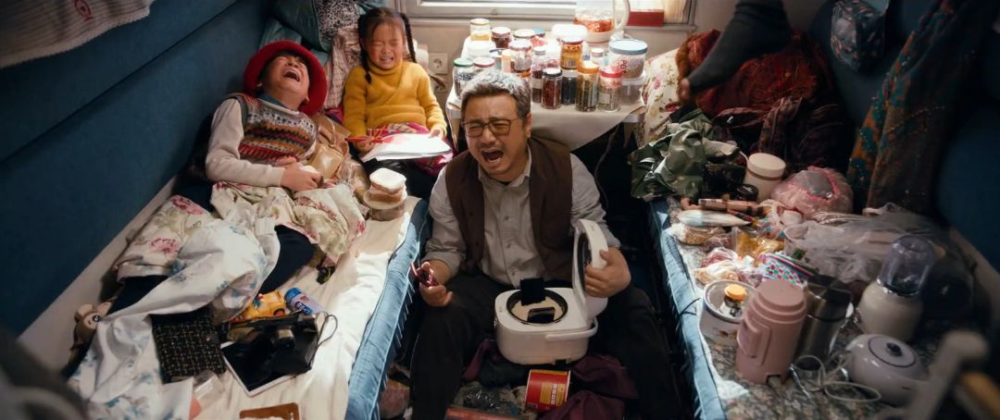

肺炎疫情中的人们
原文链接 备份链接 1月21日，湖北武汉站出站口，大部分乘客戴上了口罩。中青报·中青网记者 李峥苨/摄 据卫健委卫生应急办公室最新消息，截至1月22日24时，国内25个省（区、市）累计报告新型冠状病毒感染的肺炎确诊病例571例，13个 …

著名的K3列车。/ 作者供图
K3列车宛若平静驶过新型肺炎暴风眼的一叶小舟，看似与国内处处危殆的疫情彻底隔绝，却无时不被事关自身命运的信息和舆论拍打。
当病毒在武汉恣意横行的时候，我和家人登上了K3，这是一趟从中国奔往莫斯科的列车，我们憧憬着这趟横跨亚欧的旅行，并不太清楚发生在那座城的事有那么严重。
与此同时，可可握着一束淡紫色的雏菊登上K3列车。她用餐巾纸把面前那块有些污浊的车窗玻璃擦了擦了好几遍，随后把雏菊插了上去。
“到时候外面会有雪和白桦林，哇塞，拍照美爆。”
现实中的旅途，不总像电影中那般欢乐无忧。/ 电影《囧妈》
可可是我在登上K3之后遇见的一个上海女孩，她手捧雏菊的照片，是我在K3列车上拍摄的第一张照片。只是按下快门的瞬间，我并没有想到接下来的72小时中，手里的相机再无机会见证那些来自俄苏文学的浪漫想象如何变得生动丰满，但无意中记录下一场真实的“奥德赛”。
1月22日20时10分，K3次列车准点停靠在中蒙边境车站二连站。乘客们纷纷裹起羽绒服，冲上气温为零下十一度的站台，和绿色车身上的国徽合影留念。
或许是除夕将近，透过进站厅的玻璃门，能看到街道对面的商铺早早打了烊。唯一值得用相机记录的，是车站大楼一侧的“世界人民大团结万岁”霓虹灯。
K3列车始发于北京，经乌兰巴托，开往莫斯科，是一列被誉为“中华第一长”的跨国列车。搭上这列火车的乘客，大多是来自世界各地、渴望探索西伯利亚铁路沿线风景的游客。
不少旅游攻略都提到，在接下来的4个小时里，乘客们将在上述有限空间内经历边境检查、火车换轨，并于凌晨1点离开中国。
我跟着大伙儿涌入进站厅的一个便利店，本打算兑换点图格里克（蒙古国通用货币），这时几名边境检查人员拦在面前，进入洗手间的乘客也相继被清出，“请大家回车上等候。”
乘务员则给出更直截了当的回答：“可能走不了了。”

列车驶过遥远的雪原，却仍不能完全离开疾病的阴云。/ 作者供图

1月22日21：00
K3列车里的空气仿佛凝固了
撼动神经的紧张气息，从22日下午15时30分左右开始蔓延。
当时，列车正行至晋蒙交界，车厢拉门处突然飘来一阵浓烈的醋味，“车上有3个武汉乘客”的消息由那些端水盆的乘务员散播开来。
而当我们满腹狐疑地从二连站月台挨个上车坐定，边检人员拿着体温检测仪探向每个人的额头。
很快，车厢里的紧张氛围，在一句“一人有发热症状”的提示声后骤然升级。靠在窗边休息的乘客，都不约而同戴起了口罩。
几小时之前，K3上的乘客还以轻松口吻交流着玩“瘟疫公司”的心得，并查看彼此居住的城市是否已经“沦陷”。
同样在几小时前，北京火车站还看不到明显的新型肺炎筛查行动，这个始建于光绪年间的火车站，在2020年1月22日之前的主要运营压力，依然来自于每年的春运。
空气仿佛凝固了。车厢被切分成了两个平行的空间：有组团出游的女孩翻出桌游卡牌，“狼人！狼人！”的狂笑穿透厢壁，也有乘客用含义丰富的“凉凉”一词形容眼前的境遇，书籍、手机、pad遮掩下的眉眼多少透出焦灼。
一个在北京工作的蒙古国女孩后来说，她原本想去探望扎门乌德的亲戚，顺便去草原“自我放空”一下，现在却担心列车会不会被限制出境、“遣返”北京，自己会不会面临隔离甚至更坏的可能性。

沿途积雪的站台。/ 作者供图
在K3列车滞留于铁轨上“等待处理结果”的3个多小时里，窗外车站大钟播放的《东方红》整点报时，和远处零星的鞭炮声产生交集，一种不安全感开始从车厢的细节处显现：
循例关闭的厕所门前开始排队；扎堆插在过道边等待充电的手机电量逐渐“变红”，随后被“抢救”下来；
几个乘客尝试用茶水炉中丧失热度的饮用水洗手，以此寻求所谓的“清洁感”；
靠近站台一侧的车窗据说能看见救护车的进入，但也仅仅限于“据说”阶段。

列车穿过森林。/ 作者供图

1月22日22：30
“把隐患带出国境去，会更麻烦”
负责我所在车厢的乘务员小陆说，列车上的情况正通报给铁总、卫健委等有关部门，须有明确处理方法，方可进入换轨流程。
但作为一个置身中国边陲的铁路工作者，他掌握的信息和我们一样有限，“出乘以后才接到通知要重视这事，现在只能观望结果。当然，要是有事发生，那也已经发生了。”小陆说。
他不停地用“没事儿”安抚周围人的情绪，有乘客提议给他拿个口罩戴上，他没答应，说“不想引发恐慌情绪”。
和小陆聊天的过程中，他一直刷着手机。对工作状态下必须将手机交出的乘务员而言，这个举动显得不同寻常，“也是师傅开恩，我们这份工作，实在太难。”

车窗外的风景对旅客而言或许足够新鲜，在乘务员眼中多少有些单调。/ 作者供图
小陆坦言，与这列1996年德国生产的煤动力“原版绿皮车”——K3相伴的十年中，加煤、铲冰、打扫卫生、协助中蒙俄三国工作人员进行边检，甚至眼前的秩序维持，都是他的分内职责。
他曾试过夏天在没有冷气且空间逼仄的车厢内“蒸桑拿”，也见过过极端天气下自窗缝卷到过道地面的积雪和积沙。
他认为，任务结束后近一个月的调休，根本不足以弥合往返十三天的辛劳，至于那些人们印象中“诗和远方”的代名词——人际罕至的草原、森林和贝加尔湖，留给他的更深刻印象是零下40度的低温，以及长期的信号不足带来的困扰。
“徐峥的《囧妈》不是能看了吗？又该有特多像你们这样花钱买罪受的主儿被坑了。”

电影《囧妈》中纷乱的K3车厢。/ 电影《囧妈》
听小陆讲述时，K3列车上的乘客本能地把他的经历置于新型肺炎的语境下考虑，不同观点几经交锋，形成了一个初步结论——设备老旧，清洁条件有限的列车里潜伏着滋生病菌的危险，巨大的地域跨度也明显增加了行程中的不确定因素，不过，车厢接口处灌入的寒风仍能保证空气流通。
“比起高铁、飞机的密闭空间还是好了一些。”
“只能说K3见识过各种各样的状况，也包括眼下的一切。但把隐患带出国境去，会更麻烦。当机立断限制出境其实是最有效的办法。”
一个将90年代列车大劫案称为“亲身经历其实和电视剧里差不多”的年长列车员如此感叹。
23时43分，列车突然开始移动，像迸发出一声沉闷而令人兴奋的咳嗽，缓缓进入换轨车间。7名湖北籍及近期有过探访史的乘客已证实被劝告下车，进入了二连浩特市进行隔离。
乘友小灯后来告诉我，这其中包括与三名武汉籍乘客同包厢的一名重庆籍乘客，与此同时，一名在外地工作、生活的女孩，因为护照签发地是湖北，也不得不放弃出境。
关于这7名“被劝退”乘客的命运，我听到过两个截然不同的版本。
来自隔壁车厢的列车员说：“发热的那个37度3，已经从严处理了。其实都挺好，问题不大。”
但小灯通过一个“驴友”群了解到的情况是，发热的武汉籍乘客已被当作疑似病例单独隔离，剩下的6人虽然住在一起，但也不能离开集体宿舍。
余下的乘客并不确定是否和三名武汉籍乘客在餐车等地发生过接触，类似“都这样了，能不能不要出来乱跑”“可真不想成为新闻主角”的讨论开始在车厢里“翻滚”。
换轨时，来自车厢底部的剧烈撞击，则成为压抑情绪下唯一的正能量来源。

长长的时刻表。/ 作者供图
1月23日中午13：30
“真要确诊还跑得了你们？来瓶伏特加，消消毒”
23日凌晨3时53分，经过与新型肺炎相关的排查、登记、通报、劝返，K3次列车离开二连浩特口岸，“扎进”蒙古国的茫茫戈壁中，标有“中华人民共和国”字样的巨大“国门”开始隐遁于身后的黑暗中。
整个排查和登记的过程，持续了约7小时。
等到扎门乌德站蒙方边检人员上车，包厢门口出现17年未曾见到的隔离服、护目镜、3MN95口罩和乳胶手套。
入境卡和护照交到对方手中时，对方用中文连催促了三遍：“快！”而一个多小时前，手机推送中刚刚出现“武汉市于当日10时起关闭离汉通道”的“封城”新闻。
在餐车里见到香港籍乘客Charles时，已经是1月23日13时30分左右了。他喜欢坐火车旅行，K3的这趟旅程自己心心念念了很久。
“搭高铁去北京亦都经过武汉，好似好英雄咁，但系你话点算？”（坐高铁去北京都要经过武汉，好像特别英雄，但你说又能怎么办呢？）
“但系你话点算”，这话特别贴合“K3共同体”当时的处境。阳光把窗外的戈壁映得发亮，路边可见过坡的马和骆驼，以及冻毙动物的尸体，宛若置身雪国。
餐车里的四个北京口音乘客开了一瓶伏特加：“戴口罩有什么用啊？真要确诊还跑得了你们？来瓶伏特加，消消毒。”
1月25日10：10
从“飞来横祸”到“佛系谈笑”
1月25日10时10分，我收到同包厢乘友阿紫发来的消息：“我看到新闻报了，那个二连浩特的确诊了。你们注意点。”
我和阿紫是24日下午在贝加尔湖畔的伊尔库茨克站分手的。车门正对伊尔库茨克站绿白相间的小楼打开时，近零下十二度的新鲜空气灌入鼻腔，令人兴奋，仿佛禁闭被解除。
此前的2夜1天，我们在过境蒙古国期间全程未被允许下车，乌兰巴托站的检疫人员对车轮和垃圾桶喷洒了消毒药物。而在蒙俄边境城市多卓尔内，俄方边检人员依例应对我们的随身物品进行查验，此次却只是站在远处指挥我们自行展示。
让阿紫务必保重身体后，我连上网，在《人民日报》发布的《内蒙古新增1例新型肺炎确诊病例 累计2例》新闻中，确认了消息的真实性（锡林郭勒盟二连浩特市疑似病例确诊，为锡林郭勒盟报告首例确诊病例）。
略出乎意料的是，如果说在22日“惊魂7小时”中占主流的舆论，是将7名乘客被边境“劝退”的经历定义为“飞来横祸”，并担忧类似这种“飞来横祸”的降临可能导致自己价值数千元的在俄后续行程化为泡影，那么乘友们此时已将报备、隔离视作义务，回应也显得平静。
小灯所在的“驴友”群中出现一个帖子。原来，那名持湖北签发护照被隔离的女孩在某旅行论坛发布了“求救信”。

截至2月27日下午，这封“求救信”在微信上的阅读量已经超过五万。
“求救信”用“受困国境线”“强制抽血检查”“把我们当犯人”“海关一杆子打死”等表达描述了自己下车后的处境，但遭到评论区“以大局为重”的激烈反驳。
以此为鉴，我们简单讨论出一个“应对方针”：调整心态，坦然接受一切安排处理；
从25日起“自我隔离”，尽量减少外出，不再去餐车吃饭，对自己和他人负责。

列车上的年夜饭。/ 作者供图
事实上，以22日“惊魂7小时”为起点，车厢走道已经变身为一个“另类公共空间”。
乘友们在此交换共享的，由最初的零食、转换插头、信号良好可供上网接收信息的电子设备延展到那些“佛系谈笑”。与此同时，大家也开始用姓名互相称呼。
1月25日12：30
K3列车，驶过暴风眼的一叶小舟
乘务员老林是在25日下午加入《囧妈》的观影大军的。
彼时，他眯着眼睛站在包厢门口，费力凝望iPad屏幕中的徐峥在过于精致整洁的“K3包厢”中奔走：“这哪儿啊？K3？假！怎么能没我呢！”哄笑声中，他顺势坐在了铺上。
这是我们与乘务员的第一次打开心扉的对话。在此之前，或许是职业素养使然，他们表现得过于“置身事外”—— 从22日晚排查出一例武汉籍发热乘客到确诊新闻发布，尽管伴随着明显的面部肌肉抽动，和瞬间沉默的对视，但从小陆与他师傅老贾口中说出的“没事”“坏了”“听天由命”里，你几乎感觉不到明显的情绪起伏。
但老林并非不害怕。
出乘前一日，铺天盖地的新型肺炎疫情通报已经让他产生了担忧。直至看到那名“脸色明显不好看”的发热女乘客被带离车厢时，他有些被惊到，喝了好几口酒。
这个偏方色彩浓重的行为，是他目前能想到的唯一消毒手段。
根据他的回忆，同事们出乘时没有作特殊准备，车上条件也有限，居家急救物品不齐全，随身携带的“防护装备”，还是上车前女儿塞给他的一打口罩，以及特意去雍和宫替他求来的一枚本命年平安符。
把平安符挂到他脖子上的时候，女儿叮嘱：“爸，平平安安回来啊！”
老林说，与高铁、动车相比，绿皮火车已属于被极度边缘化的铁路出行方式。但K3因维系着1950年代以来中、蒙、俄三国的传统友谊而被赋予特殊政治意义，不能停运，即使在2003年“非典”那样的特殊时期，也必须以空驶形式正常发车。他却很想知道我们为什么非得在阖家团圆之际“上这么远的地方晃悠”。
乘友们历数春节回家有可能面对的不自在，也提到把十几天假期耗费在饭桌上，有点可惜。
后来，小灯突然感叹，人活着有时很像置身于进攻队列里的士兵，总觉得有老兵挡在前面替你承受枪林弹雨的危险，可以任性或走神儿，甚至随便责备他们，直到某一刻，才会意识到面前空了。
老林感同身受。
“女儿平时总说我不理解年轻人生活方式，和我有代沟。我想什么代沟啊，不就是‘把人带沟里’吗？”
“刚才也向你们虚心学习‘年轻人的生活方式’了，我觉得老一辈说的话确实不一定对，但他们都是苦日子过来的，看问题有自己的思路。以后多陪陪他们，多听听他们在想些什么吧，加强理解嘛！”
而当剧情中提及徐伊万父母在新疆生产建设兵团的定情之作—— 塔科夫斯基电影《伊万的童年》，一直让人觉得内向的乘友思琪突然把手机里保存的奥列格·扬科夫斯基（曾与塔可夫斯基合作过《乡愁》《镜子》的苏联男演员）涂鸦墙图片推到我面前，说这是她一定要来俄罗斯的理由，“不知道能不能实现”。
“以前读俄苏文学，老觉得命运被描写得又晦涩又沉重，现在也有点理解了。不过下车以后要是被直接遣送、隔离也不坏，一是大家有个照应，二是人要叶落归根啊。”

越过雏菊，车窗外的天光云影。/ 作者供图
车窗外已是阴云密布，大雪正卷过叶尼塞河畔的白桦林。
K3列车宛若平静驶过新型肺炎暴风眼的一叶小舟，看似与国内处处危殆的疫情彻底隔绝，却无时不被事关自身命运的信息和舆论拍打。
只是在新西伯利亚站，我顺着结冰的月台向前走，努力从外观大同小异的车厢中辨认自己的那一列，突然认出可可插在窗边的那束雏菊。
那么久过去了，它们依然活得很好。
（以上人名均系化名）

✎作者 | 费鲁稚
欢迎分享到朋友圈
未经许可禁止转载
广告合作请联系微信号：xzk9681
推 荐 阅 读
点 击 标 题 即 可 阅 读 全 文
离武汉很远的我们，离疫情并不远
十年后，这部国产鸡毛剧成了非洲人的《还珠格格》


忙于带盐的陈欧，把聚美优品齁死了
这部40年前的老电影里，
有中国人回不去的神仙爱情

原文链接 备份链接 1月21日，湖北武汉站出站口，大部分乘客戴上了口罩。中青报·中青网记者 李峥苨/摄 据卫健委卫生应急办公室最新消息，截至1月22日24时，国内25个省（区、市）累计报告新型冠状病毒感染的肺炎确诊病例571例，13个 …
原文链接 备份链接 几位口罩行业的从业者，都是在大量微信、电话疯狂轰炸的间歇，接受我们采访的。所有人的语速都异常急促——在过去的一周时间内，他们接过工信部、各地应急办、市级政府的电话；也接过各省医院、药店、大小代理商的电话；还有从未打过交 …
原文链接 备份链接 1⁄10 2020年1月25日，农历大年初一 来信：@徐大夫 坐标：武汉某心内科重症监护室 我们科室新年第一天上班的合照。 大家一起努力！ 2⁄10 2020年1月25日 来信：@双十一张友文 …
原文链接 备份链接 1月26日晚，湖北省人民政府新闻办公室就新型冠状病毒感染的肺炎疫情防控工作召开新闻发布会，武汉市长周先旺表示，因为春节和疫情的影响，目前有500多万人离开武汉，还有900万人留在城里。 这500万人去了哪里？ 1 …
原文链接 备份链接 咸宁市第一人民医院现有防护物资仅能维持一天，襄阳市中医医院防护服已告罄，N95口罩需消毒再利用，汉川市人民医院的橡胶手套快要消耗完。 全文2306字，阅读约需5分钟 1月26日，来自湖北省多地的数家医院向新京报记者证 …